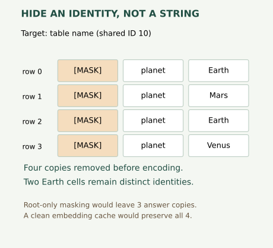
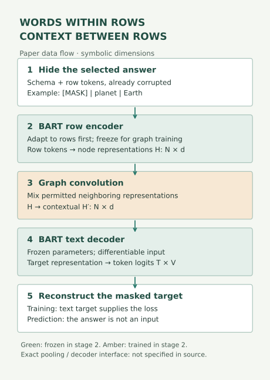
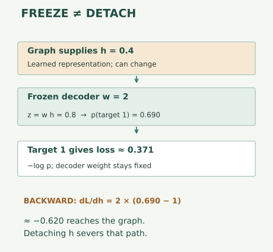

Year 4 · Lesson 159 · Foundation-model preview
Foundation models: what pre-training teaches
See the idea · then trace the details
Mask a cell, learn from its context
A relational pretraining objective must define both the hidden target and the visible evidence.
1Choose the hidden value
Observed database + explicitly hidden target
Select a cell or target to predict, then remove its value from the visible input.
2Build the allowed context
Related rows can supply predictive evidence
The schema can connect informative records. Copies of the hidden value and unavailable future information still need exclusion.
3Predict the missing content
Shared representations → configured prediction head
A loss teaches the model to recover the target from allowed context. The objective alone does not establish transfer to a new database.
Pause and predict: Is replacing one displayed cell with a mask sufficient if the same target is copied elsewhere?
No. A duplicate or derived value elsewhere can still reveal the target.
Answer: No. A duplicate or derived value elsewhere can still reveal the target.
1 · From a reusable pipeline to reusable knowledge¶
Reading route. Define the hidden identity → trace row and graph computation → place the loss → follow gradients → design a transfer test.
Your win: specify one masked reconstruction objective and explain what evidence would turn useful pre-training into a credible transfer claim. Read for about 25 minutes; allow 45–60 minutes for the notebook and one-page brief.
L158 left us with reproducible task-specific evidence, an unresolved broad advantage, and missing human-effort observations. Reusing its training script saves engineering work. It does not show that the fitted weights know how to handle a different database. This is the gap that motivates today's question: could one representation support many later tasks?
A representation is the vector a model computes from its input. Pre-training learns such vectors before the intended downstream task. Adaptation changes or conditions a pre-trained model using information from the new task. Transfer is the measured usefulness of that prior learning on a different task or population. A lower pre-training loss alone does not measure transfer.
Primary reading: Vogel, Hilprecht and Binnig (2023), Sections 2–4. The earlier curriculum incorrectly called this Zahradník's paper. Read this historical proposal alongside L147's research map, then return to its wider agenda in L162. L160's Year 4 exit requirements still apply; this preview does not clear the missing portfolio evidence.
2 · Invent a target without inventing a label¶
In plain terms. Hide something the database already contains. Ask the model to recover it from the information you deliberately leave available.
This is self-supervision: observed data supplies the training target. It still needs a strict information policy. A mask replaces selected input content with a special marker; the original content is retained separately for scoring.
Worked example. Four rows serialize the same table name, Moons. We hide the table name in row 0. If rows 1–3 still say Moons, a graph can copy the answer. This is not the task “recover a hidden table name.” It is a different, easier task: “fill one missing serialization from another.” Both can be useful, but only if we name the task accurately.
The unit to hide is a semantic identity: one actual table name, column name or cell. A table name repeats in all its rows; a column name repeats too. Two cells that both contain Earth are distinct identities. Erasing every equal string would remove legitimate context and silently change the problem.


Predict before using the control: does masking only the root row prevent a graph from seeing a repeated schema name? Switch among targets, masking policies and a clean-embedding cache. The control counts exposed target identities; it does not simulate trained-model accuracy.
Order matters. Mask → serialize/encode → propagate. If you encode the clean row first and cache that vector, changing the displayed text later does not remove the answer from the vector. The notebook tests this policy with a counterfactual: change the hidden answer while preserving all other input values; a valid corrupted input stays identical. This test covers direct target copies, not every possible proxy or temporal leak.
Lab task 1 — mask_serializations. Remove all copies of one identity without mutating the clean targets. An unrelated equal-valued cell must remain visible.
3 · Model architecture: language within rows, messages between rows¶
The paper combines row-wise BART encoding with graph convolution and a text decoder. Its procedure first adapts the language model to table rows, then freezes it while training the graph. It reconstructs cell values, column names and table names. Sections 2–4
BART is an encoder–decoder language model: an encoder maps an input token sequence to vectors; a decoder predicts an output token sequence. A token is a vocabulary item, often a piece of a word. A GNN updates node vectors using neighboring nodes. A GCN is a GNN whose graph layer mixes neighboring representations before a learned transformation.


Trace one target. Corrupt its input occurrences. Encode the permitted row content. Pass representations along the declared graph edges. Decode the target from its resulting representation. Compare the prediction with the held-out answer. At inference, the true answer is unavailable; the target must not sneak back through preprocessing.
The figure uses symbolic dimensions: N nodes, d representation width, T output tokens, V vocabulary size. The paper does not specify enough detail to reconstruct its exact pooling and decoder interface. The diagram shows the stated data flow, not an invented implementation contract. Row-wise encoding helps with many rows; a single very wide row can still exceed the encoder's token limit.
The executable model in this notebook¶
The local experiment is a smaller, explicitly different computation:
4 rows × 6 tokens → 4 × 16 row vectors → 4 × 16 contextual vectors → 3 × 2 logits at row 0.
A codec is the encoder and decoder considered together. Mean pooling averages the token vectors to obtain one vector per row. A head converts a representation into scores for one target.
A logit is a score before normalization into probabilities. We use three binary heads, one per target level. The selected head predicts class 0 or 1; it does not generate text. Our mean-pooled embedding codec is not BART. Every table is a separate four-node complete graph, with self edges; the experiment does not reconstruct the paper's graph design.
For this local graph, every normalized adjacency entry is 1/4. Thus each row receives the mean of four vectors. With H the row vectors, W a learned matrix and b a bias:
H′ = tanh((A_normalized H) W + b).
A_normalized is the 4×4 matrix of averaging weights. Multiplying it by the 4×16 matrix H produces four 16-number neighborhood means. W is a learned 16×16 transformation; b adds one learned offset per coordinate. tanh squashes each resulting number into (−1,1). The output H′ therefore still has shape 4×16.
One-coordinate trace of the local graph layer. For illustration, use row representations [.1, .3, .5, .7], scalar weight 2 and bias 0. Every row receives the same complete-graph mean .4, then outputs tanh(.4 × 2) ≈ .664:
| Row | Input | Neighborhood mean | Output |
|---|---|---|---|
| 0 | .1 | .4 | .664 |
| 1 | .3 | .4 | .664 |
| 2 | .5 | .4 | .664 |
| 3 | .7 | .4 | .664 |
This layer discards within-table row differences because all adjacency rows are identical. Reading row 0 afterward does not restore its original identity. This is a property of this deliberately simple local graph, not a claim about the paper's unspecified full interface. Try it: change only the last input to .9. Check: all four means become .45 and all outputs become tanh(.9) ≈ .716. Permuting the four original inputs instead leaves every output unchanged.
The notebook exposes the embedding, encoder, graph operation, decoder, optimizer, checkpoint selection and evaluation. It never hides a model import behind “run this cell.”
Scope check. This is a Tier C experiment: a synthetic mechanism laboratory, the course’s label for testing an idea on deliberately constructed small data. It is neither a trained foundation model nor an implementation of BART. The published target remains separately recorded as
NOT_RUN.
4 · Put the loss exactly where the question is¶
In plain terms. Reward the model for recovering the hidden answer. Do not dilute that signal by rewarding it for repeating fields we left visible.
Worked example. Suppose the correct hidden class gets probability 0.75. Its cross-entropy is −log(0.75) ≈ 0.288 nats, where a nat is a unit based on natural logarithms. Another visible field has a poor prediction. It is not a target of this example, so it contributes nothing to this objective.
For selected targets S, the classification objective is:
L = (1 / |S|) Σ_(i in S) −log p_i(correct class).
The local code uses logsumexp(logits) − correct_logit, a stable way to compute this without taking the logarithm of rounded probabilities. An empty S is an invalid example, not a zero-loss success. The paper's text decoder predicts token sequences; our binary-head loss illustrates target selection but is a different metric and output space.
Lab task 2 — masked_cross_entropy. Average only over the boolean target mask. CHECK verifies the worked probability and zero gradient for an unselected field. Your implementation drives every actual training update below.
5 · Frozen weights can still carry gradients¶
Freeze means exclude parameters from learning. Detach means sever the computational path used to differentiate an earlier value. These operations have different consequences.
Worked example. A frozen scalar decoder has weight w=2. The graph supplies h=0.4, so the logit is z=0.8; the sigmoid probability is approximately 0.690 for target 1. The gradient back to the graph is dL/dh = w(p−1) ≈ −0.620. The decoder's weight stays 2, yet the graph receives a learning signal.


Keep the decoder frozen, then sever the decoder's input path. The prediction is unchanged, but graph learning loses its gradient. In PyTorch, setting decoder parameters to requires_grad_(False) preserves input differentiation. Wrapping the whole decoder call in torch.no_grad() does not.
Lab task 3 — freeze_codec. Disable updates to codec parameters and clear old gradients. Leave ordinary forward computation intact. CHECK asks whether an input requiring gradients still receives them. The real trainer then hashes the selected codec before and after graph training and checks that it remains unchanged.
6 · Separate the published result, local result and transfer claim¶
Published evidence. Table 1 uses 10,000 tables per corpus, a 70/20/10 split, validation-selected checkpoints and three-run means. On wikiTables, row baseline versus graph accuracy is 20.75→46.15% for missing values, 66.88→83.91% for column names, and 36.99→37.85% for table names. These single-table experiments do not establish transfer to unseen multi-table databases. Section 4, Table 1
Local evidence. The notebook creates 120 four-row tables, splitting whole tables into 84 train, 24 validation and 12 test. A table supplies three target examples. Seeds 0/1/2 each train the row codec for 80 updates, select a validation checkpoint, freeze it, then train the graph for 80 updates. Test is accessed after both selections. Each arm sees the same corruptions; graph training adds both context and optimization work.
Synthetic mechanism only; percentages below are not paper scores.
| Task | Row mean ± seed SD | Graph mean ± seed SD |
|---|---|---|
| Table name | 75.00 ± 0.00% | 83.33 ± 0.00% |
| Column name | 75.00 ± 0.00% | 91.67 ± 0.00% |
| Cell value | 66.67 ± 0.00% | 100.00 ± 0.00% |
All three seeds make the same number of correct predictions here. The zero seed SD is conditional on this tiny fixed generator and split; it is not zero uncertainty about other tables. There are only 12 test targets per task per seed. Neighboring cells intentionally share the target cell's class, while independent noisy cues help reconstruct schema names. The synthetic design therefore supplies strong contextual redundancy. It cannot tell us how often that signal exists in real databases or whether extra training alone explains part of the gain.
Scope check. Author training is complete, with 216 saved predictions independently checked. That is evidence of this declared computation. Paper reproduction is
NOT_RUN; historical fidelity isNOT_ESTABLISHED; cross-database transfer isNOT_TESTED. No learner mastery follows from running the solution.
7 · What a real transfer test would need¶
A reconstruction target teaches the model to recover missing information under one corruption policy. A downstream task might instead ask for future churn. Even a perfect reconstruction score need not improve that task.
Design the boundary before training. Hold entire databases out of pre-training when claiming unseen-database transfer. State what adaptation may use: labels, rows, schema names and compute. Keep validation and test roles separate. A baseline trained from scratch should receive a declared comparable tuning and adaptation budget. Report pre-training cost separately; amortization over hypothetical future tasks is not observed savings.
Specify a falsifier. For example: “On predeclared held-out databases and fixed label budgets, pre-training must improve the chosen downstream metric by a practically meaningful amount versus scratch.” Choose that amount and the uncertainty procedure before test inspection. If the condition fails, retain the negative result. This is a proposed experiment, not an outcome from today's lab.
This extends L158's discipline: a broader claim needs broader evidence. It also explains the Year 5 agenda without treating the foundation-model vision as accomplished.
8 · Reproduction audit and your one-page brief¶
Named target: the Table 1 wikiTables row-versus-graph comparison, all three tasks and three runs. The protocol audit records what is known and what is missing. Exact table/split identities, a matching released implementation and sufficient training/decoding details were not located. The source manifest pins inspected bytes. Our bounded search is not proof of nonexistence.
The paper gate reports those blockers and exits without training. There is no historical benchmark trainer in this package. Unlocking it requires recovering the recipe, implementing or replaying the actual model, and estimating the complete cost. Your standing $10 ceiling covers all seeds, retries and validation; it does not make an unspecified experiment runnable. This lesson used $0 cloud compute.
Open the student notebook, or inspect the executed author solution after attempting the tasks. Use the quick reference and brief template.
Write 400–600 words: name the unresolved need; specify one corruption objective; trace the computation and frozen-weight boundary; distinguish the three evidence levels; propose a falsifiable transfer experiment. The rubric scores objective clarity, leakage discipline, computation, evidence scope and feasibility, each 0–2. Aim for 8/10 with no zero after teacher review.
Spaced practice: tomorrow recall the three targets and explain frozen versus detached without notes. In a week, diagnose a new duplicated-schema masking bug. Ask the teaching agent any follow-up questions and submit your brief for review. Passing CHECK cells leaves the written defense pending. Carry that distinction into Lesson 160: a correct reconstruction exercise cannot replace missing portfolio experiments.
Visible mechanism implementation¶
The full trainer and generator are inline in the notebook. These are the local binary mechanism components; they do not implement BART.
Read the masking, loss, freezing and neural layers
def mask_serializations(tokens, identities, target):
"""Remove every serialization of one semantic identity, leaving targets intact."""
if tokens.shape != identities.shape or tokens.ndim != 2:
raise ValueError('Expected equally shaped row-by-token tensors')
hidden = identities == target
if target < 0 or not bool(hidden.any()):
raise ValueError('Unknown semantic target')
result = tokens.clone()
result[hidden] = 0 # 0 is the dedicated MASK token, never a target class.
return result
def masked_cross_entropy(logits, labels, selected):
"""Mean classification loss over explicitly selected targets, not all fields."""
if logits.shape[:-1] != labels.shape or labels.shape != selected.shape:
raise ValueError('Target and selection shapes must match logits')
if selected.dtype != torch.bool or not bool(selected.any()):
raise ValueError('Select at least one target with a boolean mask')
scores = logits[selected]
truth = labels[selected]
return (torch.logsumexp(scores, dim=-1) - scores.gather(1, truth[:, None]).squeeze(1)).mean()
def freeze_codec(codec):
"""Freeze parameters, not the function: the decoder must differentiate its input."""
codec.eval()
for parameter in codec.parameters():
parameter.requires_grad_(False)
parameter.grad = None
class RowCodec(nn.Module):
"""Embedding mean -> nonlinear row representation -> three binary heads."""
def __init__(self, width=16):
super().__init__()
self.embedding = nn.Embedding(14, width)
self.encoder = nn.Linear(width, width)
self.decoder = nn.Linear(width, 6)
def encode(self, tokens):
return torch.tanh(self.encoder(self.embedding(tokens).mean(dim=-2)))
def decode(self, hidden):
return self.decoder(hidden).reshape(*hidden.shape[:-1], 3, 2)
class TableGraph(nn.Module):
"""One GCN-style layer over a four-row complete graph, including self edges."""
def __init__(self, width=16):
super().__init__()
self.weight = nn.Parameter(torch.eye(width))
self.bias = nn.Parameter(torch.zeros(width))
def forward(self, hidden):
n = hidden.shape[-2]
adjacency = torch.ones(n, n, dtype=hidden.dtype, device=hidden.device) / n
return torch.tanh(adjacency @ hidden @ self.weight + self.bias)